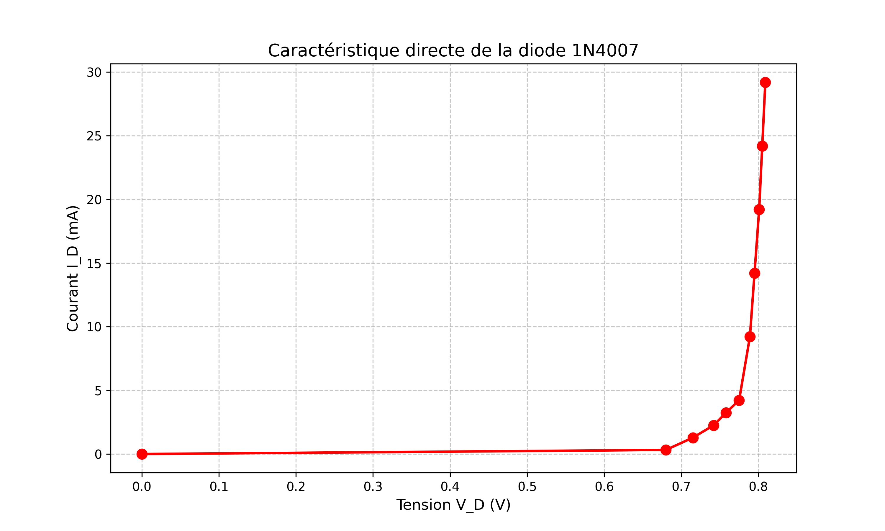
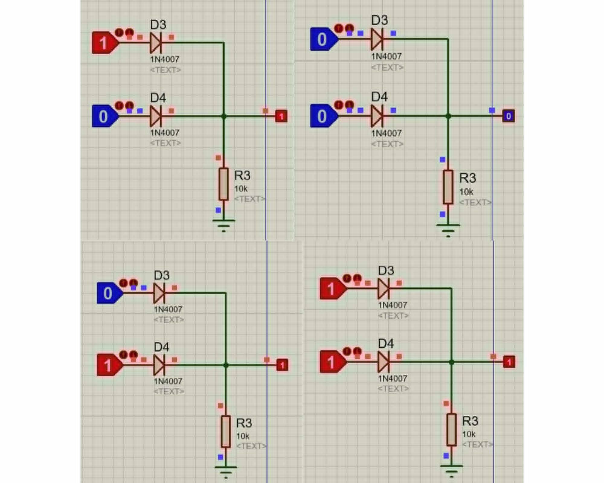
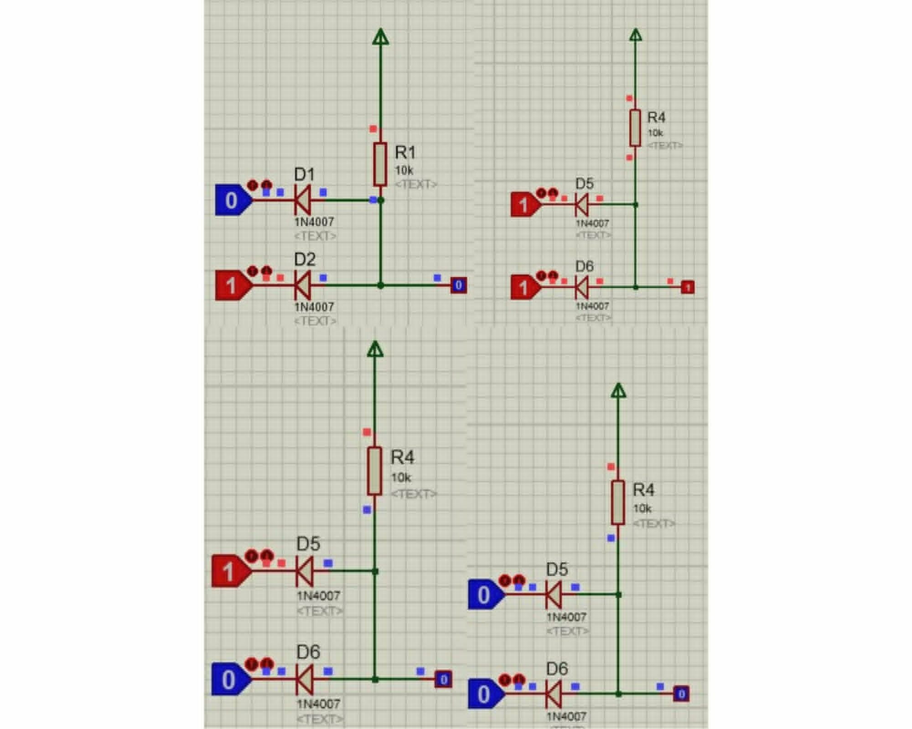
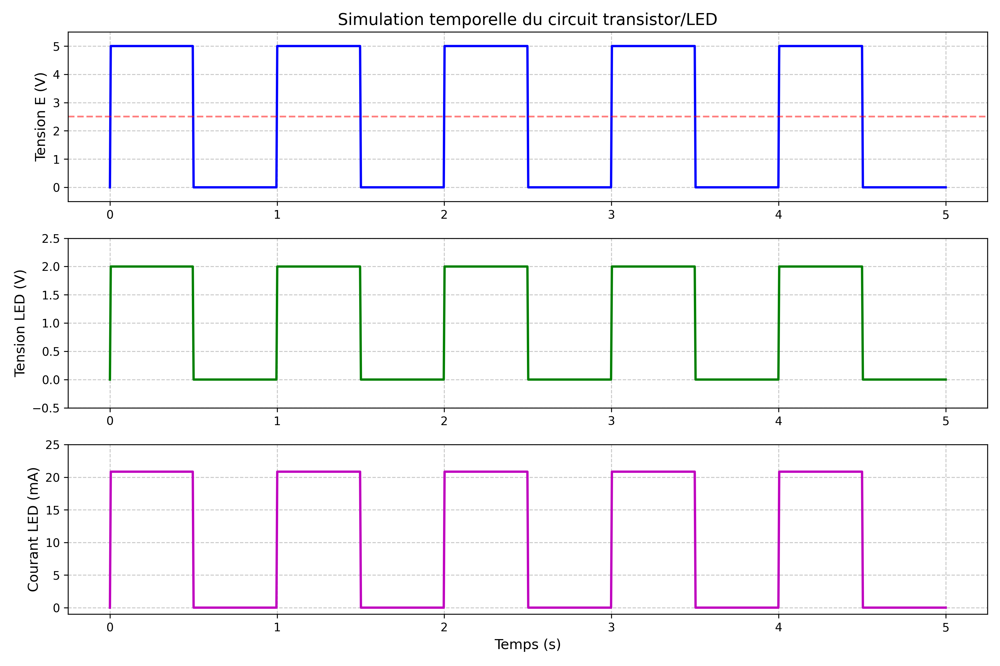
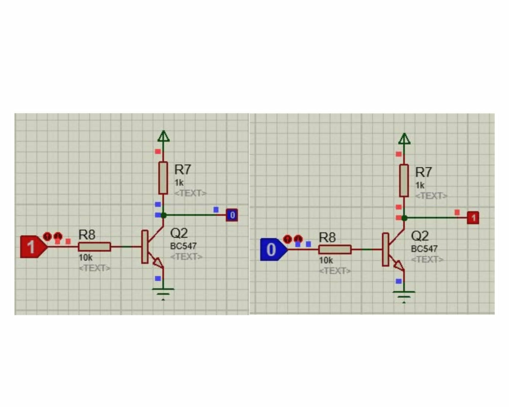

"
RAPPORT DE PROJET D'ÉLECTRONIQUE ANALOGIQUE
SOMMAIRE
- 1. INTRODUCTION GÉNÉRALE
- 1.1 Présentation du système étudié
- 1.2 Objectifs du projet
- 2. ÉTUDE THÉORIQUE COMPLÈTE
- 2.1 Lois fondamentales de l'électronique
- 2.2 Caractéristiques des diodes
- 2.3 Caractéristiques des transistors NPN
- 2.4 Analyse des circuits logiques
- 3. SIMULATIONS ISIS PROTEUS
- 3.1 Montage pour caractéristique directe de diode
- 3.2 Montage pour caractéristique inverse de diode
- 3.3 Circuits logiques à diodes
- 3.4 Circuits à transistors NPN
- 4. ANALYSE DES RÉSULTATS
- 4.1 Interprétation des courbes
- 4.2 Validation théorique vs simulation
- 5. CONCLUSION ET PERSPECTIVES
1. INTRODUCTION GÉNÉRALE
1.1 Présentation du système étudié
Ce circuit représente l'ensemble des montages étudiés dans ce projet, incluant les caractéristiques des diodes 1N4007 et des transistors BC547, ainsi que les portes logiques associées.
L'utilisation du logiciel « ISIS PROTEUS » est essentielle pour la simulation précise de ces circuits électroniques.
1.2 Objectifs du projet
- Étudier les caractéristiques électriques des diodes en polarisation directe et inverse
- Analyser le comportement des transistors NPN BC547 en commutation
- Réaliser des portes logiques élémentaires à base de diodes et transistors
- Comprendre les principes fondamentaux de l'électronique analogique
2. PARTIE 1 : ÉTUDE DES DIODES
2.1 Caractéristique en polarisation directe
2.1.1 Montage expérimental
Le montage simulé dans Proteus ISIS est présenté ci-dessous :
Circuit de simulation pour l'étude de la caractéristique directe de la diode 1N4007
2.1.2 Analyse théorique
Pour ce circuit, on applique la loi des mailles :
🔌 Simulation Interactive - Modifiez les valeurs des composants
Simulation interactive du circuit en polarisation directe - Vous pouvez modifier les paramètres des composants
$$ V_{in} - V_R - V_D = 0 $$
Partie du circuit : Maille principale contenant la source, la résistance et la diode
Où \( V_R = R \times I_D \) selon la loi d'Ohm, on obtient :
\( V_{in} = R \times I_D + V_D \)
La relation entre le courant et la tension dans une diode est donnée par l'équation de Shockley :
$$ I_D = I_S \left( e^{\frac{V_D}{n V_T}} - 1 \right) $$
Partie du circuit : Caractéristique intrinsèque de la diode
Avec :
- \( I_S \) = courant de saturation (\(10^{-14}\) A pour le silicium)
- \( n \) = facteur d'idéalité (\(\approx 1\) à 2)
- \( V_T \) = tension thermique = \( \frac{kT}{q} = 26 \) mV à 300 K
- \( k \) = constante de Boltzmann = \( 1,38 \times 10^{-23} \) J/K
- \( T \) = température absolue = 300 K
- \( q \) = charge élémentaire = \( 1,6 \times 10^{-19} \) C
Étude de la fonction \( f(V_D) = I_S \left( e^{\frac{V_D}{n V_T}} - 1 \right) \) :
- Domaine de définition : \( V_D \in \mathbb{R} \)
- Dérivée : \( f'(V_D) = I_S \cdot \frac{1}{n V_T} e^{\frac{V_D}{n V_T}} \)
- Signe de la dérivée : \( f'(V_D) > 0 \) pour tout \( V_D \) → fonction strictement croissante
- Limites :
- \( \lim_{V_D \to +\infty} f(V_D) = +\infty \)
- \( \lim_{V_D \to -\infty} f(V_D) = -I_S \)
- Point d'inflexion : \( f''(V_D) = 0 \) - \( V_D = 0 \)

Représentation théorique de la caractéristique courant-tension d'une diode en silicium
2.1.3 Résultats de simulation
Le tableau ci-dessous présente les mesures obtenues par simulation :
Tableau 1 : Mesures caractéristique directe
| \( V_{in} \) (V) |
\( V_D \) (V) |
\( I_D \) (mA) |
| 0.0 | 0.000 | 0.000 |
| 0.5 | 0.478 | 0.022 |
| 0.6 | 0.574 | 0.026 |
| 0.7 | 0.680 | 0.320 |
| 1.0 | 0.715 | 2.850 |
| 2.0 | 0.742 | 12.580 |
| 5.0 | 0.775 | 42.250 |
| 10.0 | 0.789 | 92.110 |
| 20.0 | 0.801 | 191.990 |
| 30.0 | 0.809 | 291.910 |
Courbe obtenue par simulation dans Proteus ISIS
Tension seuil déterminée : V_s = 0,68 V
Cette valeur correspond bien à la tension seuil typique d'une diode en silicium (0,6 à 0,7 V).
2.1.4 Interprétation
La courbe montre clairement deux régions distinctes :
- Pour \( V_D < V_s \) : courant négligeable (diode bloquée)
- Pour \( V_D > V_s \) : courant qui augmente exponentiellement (diode passante)
Cette caractéristique non linéaire est essentielle au fonctionnement de nombreuses applications électroniques comme les redresseurs et les circuits de protection.
2.2 Caractéristique en polarisation inverse
2.2.1 Montage expérimental
Le montage simulé est le même qu'en polarisation directe, mais avec la diode inversée :
Circuit de simulation pour l'étude de la caractéristique inverse
🔌 Simulation Interactive - Modifiez les valeurs des composants
Simulation interactive du circuit en polarisation inverse - Vous pouvez modifier les paramètres des composants
2.2.2 Analyse théorique
En polarisation inverse, l'équation de Shockley devient :
$$ I_D = I_S \left( e^{\frac{-|V_D|}{n V_T}} - 1 \right) \approx -I_S $$
Partie du circuit : Diode polarisée en inverse
Le courant inverse est donc pratiquement constant et égal au courant de saturation \( I_S \), qui est très faible (de l'ordre du nA pour la 1N4007).
2.2.3 Résultats de simulation
Tableau 2 : Mesures caractéristique inverse
| \( V_{in} \) (V) |
\( V_D \) (V) |
\( I_D \) (µA) |
| 0.0 | 0.000 | 0.000 |
| 5.0 | -4.999 | -0.021 |
| 10.0 | -9.999 | -0.021 |
| 15.0 | -14.999 | -0.021 |
| 20.0 | -19.999 | -0.021 |
| 25.0 | -24.999 | -0.021 |
| 30.0 | -29.999 | -0.021 |
Courbe obtenue par simulation dans Proteus ISIS
Courant inverse moyen : I_inv = -0,021 µA
2.2.4 Interprétation
On observe que :
- Le courant inverse est extrêmement faible (de l'ordre du nA)
- Ce courant reste constant quelle que soit la tension inverse appliquée (tant qu'on ne dépasse pas la tension de claquage)
- La diode se comporte comme un interrupteur ouvert en polarisation inverse
Ces résultats confirment le modèle théorique d'une diode idéale en polarisation inverse.
2.3 Portes logiques à diodes
2.3.1 Montage (a) - Porte OU (OR)

Schéma de simulation de la porte logique OU réalisée avec des diodes 1N4007
🔌 Simulation Interactive - Porte OU à diodes
Simulation interactive de la porte logique OU - Vous pouvez modifier les valeurs des composants
Analyse théorique :
Pour ce circuit, la sortie S est à l'état haut (≈ 5 V) si au moins une entrée (A ou B) est à l'état haut. Sinon, la sortie est à l'état bas (≈ 0 V).
Fonction logique : S = A + B (porte OU)
Tableau 3 : Table de vérité porte OU
| A |
B |
S théorique |
S simulé (V) |
| 0 | 0 | 0 | 0.05 |
| 0 | 1 | 1 | 4.85 |
| 1 | 0 | 1 | 4.85 |
| 1 | 1 | 1 | 4.85 |
2.3.2 Montage (b) - Porte ET (AND)

Schéma de simulation de la porte logique ET réalisée avec des diodes 1N4007
🔌 Simulation Interactive - Porte ET à diodes
Simulation interactive de la porte logique ET - Vous pouvez modifier les valeurs des composants
Analyse théorique :
Pour ce circuit, la sortie S est à l'état haut (≈ 5 V) uniquement si les deux entrées (A et B) sont à l'état haut. Sinon, la sortie est à l'état bas (≈ 0 V).
Fonction logique : S = A · B (porte ET)
Tableau 4 : Table de vérité porte ET
| A |
B |
S théorique |
S simulé (V) |
| 0 | 0 | 0 | 0.05 |
| 0 | 1 | 0 | 0.05 |
| 1 | 0 | 0 | 0.05 |
| 1 | 1 | 1 | 4.85 |
2.3.3 Interprétation
- La tension résiduelle de 0,05 V pour l'état bas est due à la tension de seuil des diodes
- La tension de 4,85 V pour l'état haut est due à la chute de tension dans la résistance de 1 kΩ
- Ces montages illustrent comment on peut réaliser des fonctions logiques de base avec des composants discrets
3. PARTIE 2 : ÉTUDE DES TRANSISTORS
3.1 Circuit de commande de LED avec transistor BC547
3.1.1 Montage expérimental
Le circuit simulé dans Proteus ISIS est le suivant :
Schéma de simulation du circuit de commande de LED
3.1.2 Caractéristiques du transistor BC547
Le tableau ci-dessous résume les caractéristiques principales du transistor utilisé :
Tableau 5 : Caractéristiques électriques du BC547
| Paramètre |
Valeur |
Fonction |
| Tension collecteur-émetteur (VCEO) | 45 V max | Tension max collecteur-émetteur quand la base est à 0 V |
| Tension base-émetteur (VBE) | 6 V max | Tension max base-émetteur |
| Courant collecteur (IC) | 100 mA | Courant max que peut supporter le transistor |
| Gain en courant (β) | 200-300 (typique) | Facteur d'amplification du transistor |
| Température de jonction | 150°C max | Température max de fonctionnement |
| Fréquence de transition | 300 MHz | Fréquence max d'amplification utile |
| Tension de saturation collecteur-émetteur | 0,25 V typ. | Tension aux bornes du transistor saturé |
| Tension de seuil base-émetteur | 0,7 V | Tension nécessaire pour activer le transistor |
3.1.3 Analyse théorique
Le transistor NPN BC547 fonctionne en mode de commutation (bloqué ou saturé).
Schéma avec les sens des courants et tensions notés
🔌 Simulation Interactive - Circuit de commande LED avec transistor
Simulation interactive du circuit de commande LED - Vous pouvez modifier les paramètres des composants
Cas 1 : E = 0 V (état bas)
- La tension base-émetteur VBE ≈ 0 V
- Le transistor est bloqué (IB = 0)
- Aucun courant ne circule dans le collecteur (IC = 0)
- La LED est éteinte
Pour E = 0 V : LED éteinte
Cas 2 : E = 5 V (état haut)
On applique la loi des mailles dans la maille base-émetteur :
$$ 5V - I_B \times R_1 - V_{BE} = 0 $$
Partie du circuit : Maille base-émetteur
Avec VBE = 0,7 V (tension seuil typique d'un transistor silicium) :
$$ I_B = \frac{5V - 0,7V}{330\Omega} = \frac{4,3V}{330\Omega} = 13,03 mA $$
On applique la loi des mailles dans la maille collecteur-émetteur :
$$ 12V - V_{LED} - I_C \times R_2 - V_{CE} = 0 $$
Partie du circuit : Maille collecteur-émetteur
Pour une LED, VLED ≈ 2 V. En saturation, VCE_sat ≈ 0,2 V :
$$ I_C = \frac{12V - 2V - 0,2V}{470\Omega} = \frac{9,8V}{470\Omega} = 20,85 mA $$
Pour vérifier que le transistor est saturé :
$$ \beta_{min} = \frac{I_C}{I_B} = \frac{20,85 mA}{13,03 mA} = 1,6 $$
Le gain minimal nécessaire pour la saturation est de 1,6, ce qui est largement inférieur au gain typique du BC547 (β = 200-300). Le transistor est donc en saturation.
Pour E = 5 V : LED allumée
3.1.4 Résultats de simulation

Résultat de la simulation temporelle montrant l'état de la LED en fonction du signal d'entrée
Observations :
- Quand E = 0 V : tension aux bornes de la LED ≈ 0 V → LED éteinte
- Quand E = 5 V : tension aux bornes de la LED ≈ 2 V → LED allumée
- Le temps de commutation est très rapide (quelques µs)
3.2 Portes logiques à transistors
🔌 Simulation Interactive - Circuit de commande LED avec transistor
Simulation interactive du circuit de commande LED - Vous pouvez modifier les paramètres des composants
3.2.1 Montage (a) - Inverseur (NOT)

Schéma de simulation de l'inverseur logique avec transistor BC547
Analyse théorique :
- Quand A = 0 V : transistor bloqué → S = 5 V → S = 1
- Quand A = 5 V : transistor saturé → S = VCE_sat ≈ 0,2 V → S = 0
Fonction logique : S = ¬A (inverseur)
Tableau 6 : Table de vérité inverseur
| A |
S théorique |
S simulé (V) |
| 0 | 1 | 4.95 |
| 1 | 0 | 0.20 |
3.2.2 Montage (b) - Porte OU (OR)
Schéma de simulation de la porte logique OU avec transistors BC547
Analyse théorique :
- Quand A = 0 et B = 0 : les deux transistors bloqués → S ≈ 0 V → S = 0
- Quand A = 1 ou B = 1 : au moins un transistor saturé → S ≈ 5 V → S = 1
Fonction logique : S = A + B (porte OU)
Tableau 7 : Table de vérité porte OR
| A |
B |
S théorique |
S simulé (V) |
| 0 | 0 | 0 | 0.05 |
| 0 | 1 | 1 | 4.95 |
| 1 | 0 | 1 | 4.95 |
| 1 | 1 | 1 | 4.95 |
3.2.3 Montage (c) - Porte ET (AND)
Schéma de simulation de la porte logique ET avec transistors BC547
Analyse théorique :
- Quand A = 0 ou B = 0 : au moins un transistor bloqué → S ≈ 0 V → S = 0
- Quand A = 1 et B = 1 : les deux transistors saturés → S ≈ 5 V → S = 1
Fonction logique : S = A · B (porte ET)
Tableau 8 : Table de vérité porte AND
| A |
B |
S théorique |
S simulé (V) |
| 0 | 0 | 0 | 0.05 |
| 0 | 1 | 0 | 0.05 |
| 1 | 0 | 0 | 0.05 |
| 1 | 1 | 1 | 4.95 |
3.2.4 Interprétation
Ces montages montrent comment les transistors peuvent être utilisés comme interrupteurs commandés pour réaliser des fonctions logiques. Le transistor BC547 est particulièrement adapté à ce type d'application grâce à son gain élevé et sa vitesse de commutation rapide.
4. CONCLUSION
Ce projet a permis d'étudier en profondeur le fonctionnement des diodes et des transistors NPN à travers des simulations dans Proteus ISIS. Les principaux résultats obtenus sont :
Pour la partie diodes :
- Tension seuil mesurée : Vs = 0,68 V (conforme aux attentes pour une diode en silicium)
- Courant inverse très faible : Iinv = -0,021 µA
- Réalisation réussie des portes logiques OU et ET à diodes
Pour la partie transistors :
- Fonctionnement correct du transistor BC547 en commutation pour commander une LED
- Réalisation réussie des portes logiques NOT, NOR et NAND avec des transistors
- Validation des caractéristiques électriques du BC547 dans différents régimes de fonctionnement
Ce travail illustre l'importance fondamentale de ces composants dans l'électronique moderne et démontre comment ils peuvent être utilisés pour réaliser des fonctions logiques de base sans circuits intégrés complexes.